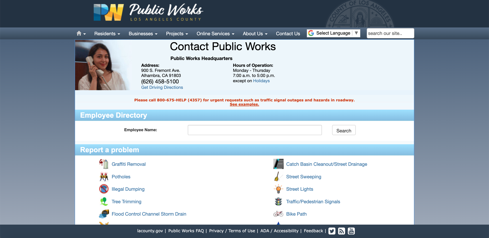
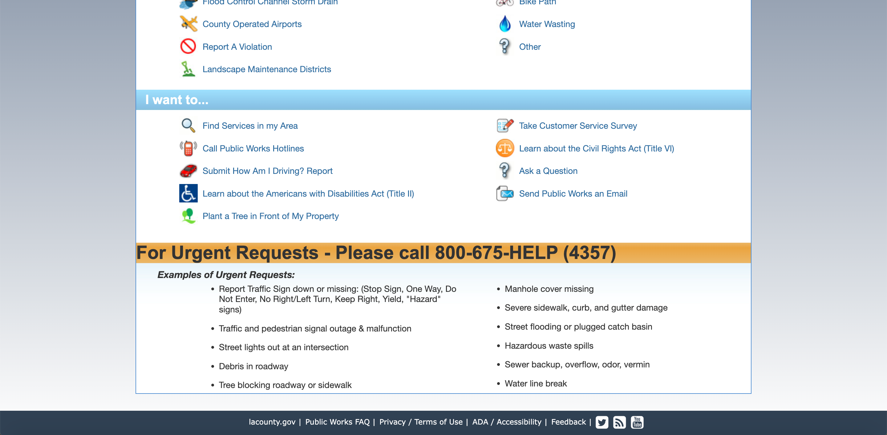
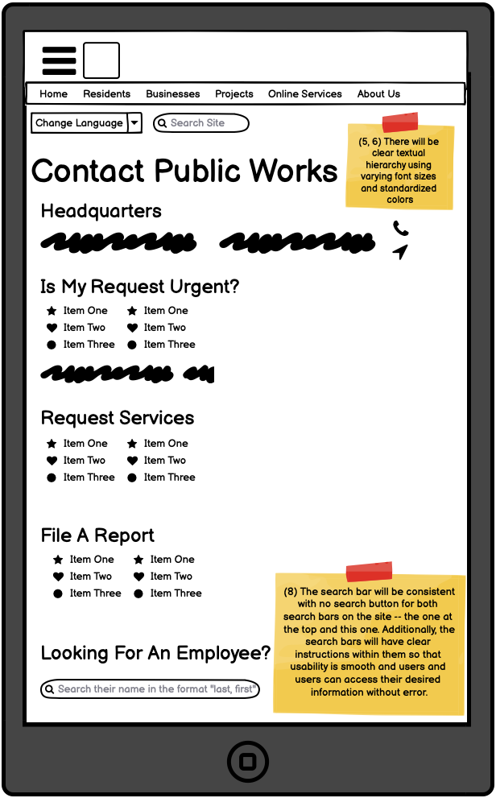
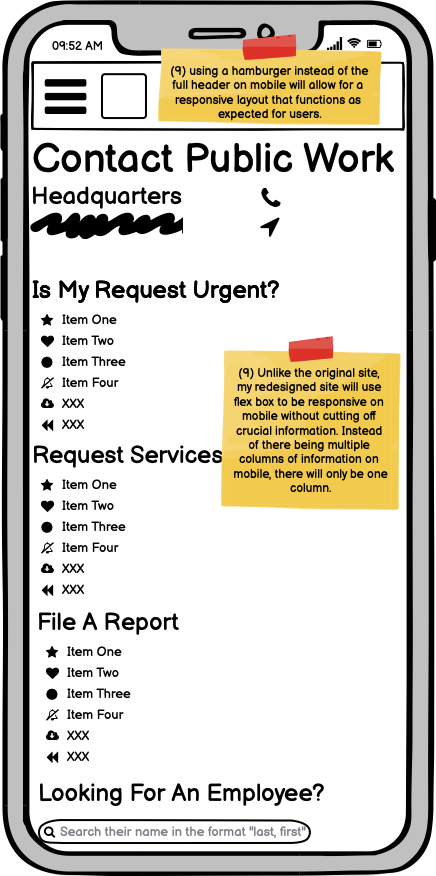
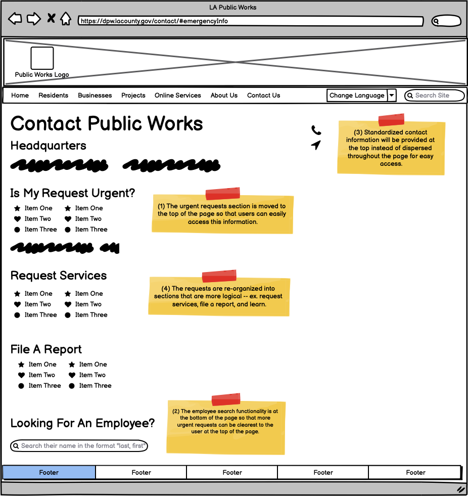
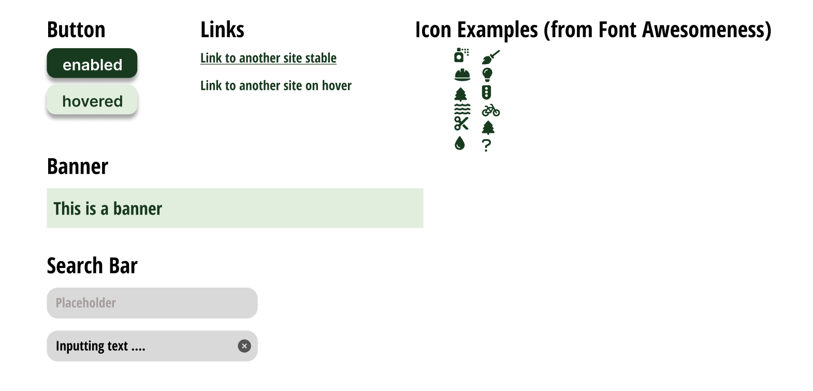
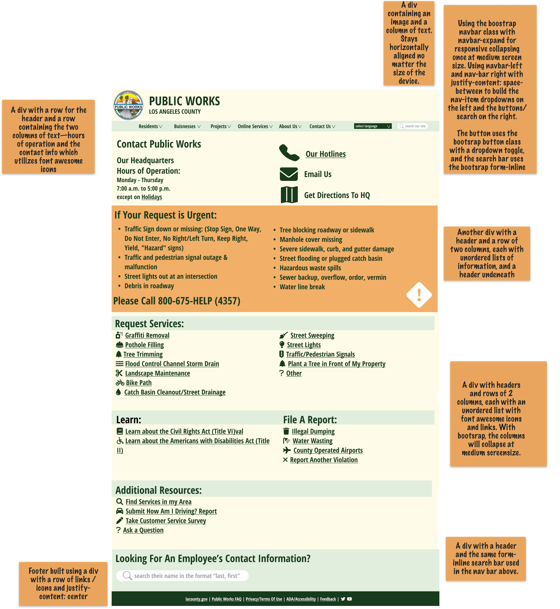
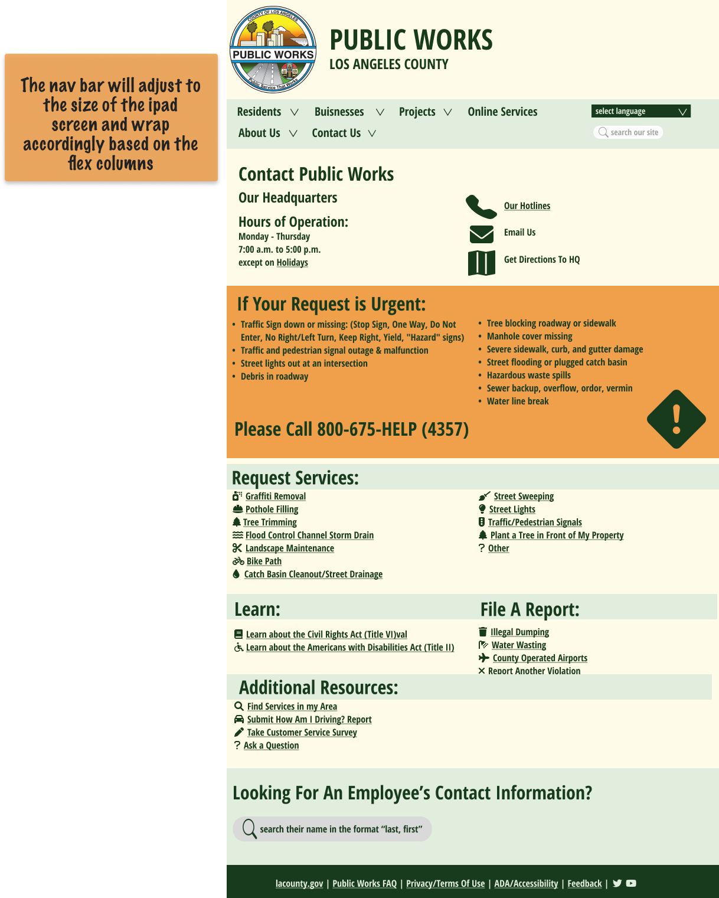
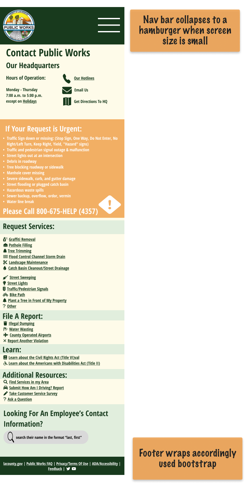

Introduction
Public services are crucial to the safety and prospering of communities, yet the websites that
are meant to publicize these services are often confusing and outdated. I was inspired to redesign the
Department of Public Works website for my hometown of Los Angeles,
and to test my design skills in the process.
The Original Site: Identifying Usability Problems


After interacting with the original site (pictured above), I documented the following concerns I had with the usability (including efficiency), learnability, and memorability of the site.
Illogical reading path encouraged
- [1] In an emergency, a user would need to quickly access instructions in regard to their situation.
Yet, the “urgent requests” section is at the bottom of the page, preventing easy visibility.
While there is a message “Please call 800-675-HELP (4357) for urgent
requests…” at the top of the page, the text is tiny and the link to examples is at the
end of the chunk of text.
- [2] Similarly, the “employee directory” is at the top of the page, which does not make sense as it
is not the most pressing and important information on the page. The small text reading
“employee name” does not provide sufficient or accessible documentation to the user in
regard to how to complete this search.
Unclear Information
- [3] There is redundancy in the contact information on the site—one phone number is listed at the top
and another is listed as an option to “Call Public Works” which would likely confuse a user, given
that the numbers are not indicated to be the same or different. There is also an email at the top
of the site and a “Send Public Works an Email” link at the bottom.
- [4] The headers do not correctly encapsulate their content. For example, under the "Report A Problem"
header, not all of the options are listed as problems (like “County Operated Airports” and
“Tree Trimming”), making it difficult for users to know where to look for their problem.
Stylistic Inconsistency
- [5] The poor textual hierarchy of the site makes it difficult to use and learn, as a reading path is not encouraged.
This can be seen in the differences of header sizes and randomness of italitazation and bolding of text.
Elements of equal importance should have equal size.
- [6] There is inconsistency in underlining/linking—-the “see examples” link at at the warning near
the header is an underlined link, whereas all of the other links on the site are not underlined until hovered over.
- [7] The poor contrast on headers (white text on light blue background) make the site difficult to navigate and inaccessible.
- [8] Search bar inconsistency — There is a button to submit your search for the employee search but not for the overall
site search. This inconsistency makes memorability difficult.
Mobile Compatability Concerns
[9] On mobile devices, the site is extremely warped, incompatible, and hard to navigate, leaving users stuck and confused.
Accessibility Concerns
I used WebAIM WAVE to detect and consider possible accessibility problems with the site.
The WAVE report for this site reported 12 errors, 4 contrast errors, and 6 alerts. Some of the errors reported, specifically the
“empty link” and “empty button” warnings did not seem to be actual issues on the site and referenced text that is not meant to
be a link, so I do not agree with those problems. The “contrast errors” and the tools on WAVE to better understand contrast and
text accessibility were very helpful, though. Additionally, the ARIA accessibility analysis was helpful for better unedrstanding
site accessibility.
Next, it was time for a visual redesign
First, Low-Fidelity Wireframing
Here are wireframes of my proposed redesign of the site, created using Balsamiq.
There are 3 wireframes for mobile, tablet, and web layouts, as I am building out a
responsive redesign. Each of the numbers are listed in reference to the usability error from above that the change is solving.
See the wireframes



Visual Style Guide
Below is clear documentation of the visual style I planned to utilize in the building out of the revised site.

High-Fidelity Prototyping
Below are three hi-fi prototypes based on the previous low-fi prototypes. They are annotated with
the different elements and key layout choices so that the site is easily producable after this
step. I plan to build the site using the Bootstrap class.
Web Hi-Fi

Tablet Hi-Fi

Mobile Hi-Fi

Lessons Learned & Lingering Thoughts
This was the first time I've worked on a redesign of an existing site, and I learned quite a bit through this journey--from how
to have a critical eye for a website while still recognizing positive elements to preserve, to how to create a solid code plan
and framework before beginning to build. I was also teaching myself HTML and CSS as I worked through this, and this project
was a testiment to how much I love teaching myself new ways of building with code, and also how frusturating it sometimes can be.
Thank you for reading!